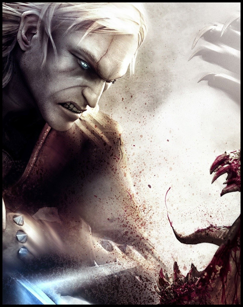
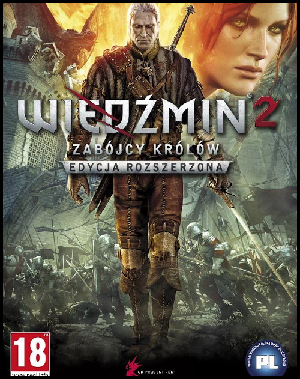

Wojciech Szymański
Gry w uniwersum Wiedźmina
Saga o Wiedźminie doczekała się cyfrowej kontynuacji w formie gier, które stworzyło Polskie studio CD Projekt Red
Obecnie mamy możliwość zagrania w 3 odsłony przygód Geralta z Rivi
/h2>
 
Wiedźmin (2007) Wiedźmin 2: Zabójcy Królów (2011) Wiedźmin 3: Dziki Gon (2015)